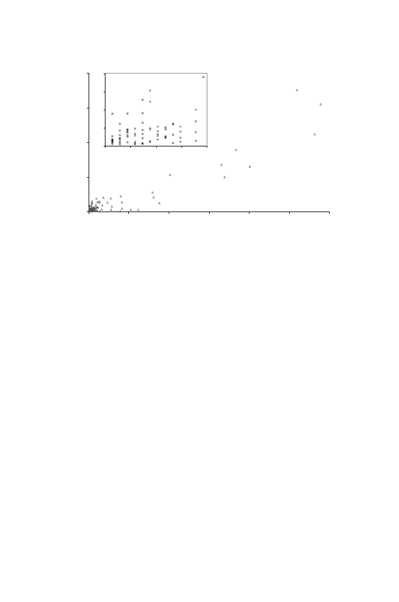

11.2 How Are Transcript Levels Measured?
293
0
250
500
750
1000
0
50
100
150
200
250
300
0
25
50
75
100
0.0
2.5
5.0
7.5
10.0
mRNA abundance (copies/cell)
Protein abundance (copies/cell x 10 )
3
Fig. 11.1.
Relationship between protein and mRNA abundances. The amounts of
protein per cell for abundant transcripts (more than 75 copies per cell) show a high
degree of correlation with the amount of corresponding mRNA. Correlation between
protein amounts and mRNA levels is much poorer for low-abundance transcripts
(inset box). Reprinted, with permission, from Gygi SP et al. (1999)
Molecular and
Cellular Biology
19:1720–1730. Copyright
©
1999 American Society for Microbiol-
ogy.
a definition of an EST). In contrast, closed architecture approaches focus on
a predetermined set of categorical data (e.g., annotated ESTs). SAGE and
TOGA are examples of open architecture approaches. Both apply particular
cloning and amplification procedures for sampling a portion of each mRNA
sequence. Spotted microarray and oligonucleotide chip technologies are closed
architecture systems in the sense that the probes are determined from prior
knowledge, as represented in sequence and EST databases, for example. In
the case of EST data,
someone else
did the cloning of the cDNA sequences.
Although we concentrate on the closed systems because they are currently
more extensively employed, we provide a brief description of SAGE and TOGA
here.
TOGA (TOtal Gene expression Analysis) (Sutcliffe et al., 2000) associates
with each detectable mRNA species a
digital sequence tag
, which depends
upon a particular set of octamer sequences and their distances from the 3
end of the mRNA. The starting material is polyadenylated mRNA extracted
from any eukaryotic organism. After an initial reverse transcription to pro-
duce cDNA (including a
Not
I sequence in the primer supplied), digestion with
an enzyme such as
Msp
I (recognition sequence 5
-
C
↓
CGG
-3
) produces a frag-
ment of characteristic length from the portion of each cDNA adjacent to the
3
end of the mRNA (Fig. 11.2). These fragments are cloned and subjected